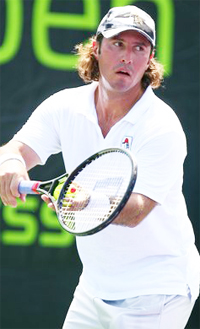

Increasing Confidence¶
By Allen Fox, Ph.D.¶

Some individuals seem born more confident than others.
Underlying the confidence of victory is your basic confidence level. This is the confidence level that you were either born with or that was formed during early childhood.
Nobody knows for sure the parts played by genetics and early experience in developing our basic levels of confidence. But for whatever reasons, it is clear that we are not all equally endowed.
Some fortunate individuals just seem to be born more confident than others. We all become more confident with victory, regardless of our initial levels of confidence. But those with higher natural levels seem to experience a greater increase in confidence with each victory and a lesser decrease with each loss than the rest of us.
How do we learn to increase confidence? Surrounding yourself with positive people is always a benefit, whether it is in tennis or elsewhere. It is certainly advantageous to have a coach who builds you up rather than one who breaks you down.

A coach can improve your confidence to an extent.
But the coach's words should be realistic and credible. It is most useful to have a coach that appreciates your strengths while not ignoring your weaknesses and still has faith in your basic competence as a competitor.
A coach can build your confidence by telling you that you are doing well when you actually are and by identifying your weaknesses as opportunities for improvement. If this is handled well, it can improve your confidence to some extent, but not nearly to the extent provided by winning.
Coaches should refrain from admonishing their pupils to have more self-belief. No one can tell you to have it. You are born with some, may obtain a little from positive mentors, but get the bulk of it by winning. You get none of it from someone telling you to get more of it.
Realize there is nothing wrong with you if you are not confident of winning when you step on court to play someone better than you. Self-belief implies certainty, and reasonable people simply don't feel certain of beating people who are better than they are. The biggest danger is thinking you have a character weakness if you lack self- belief against players better than you.

Safin was able to win Slams without believing he could.
That can be debilitating. And we saw with Marat Safin in the first article, you can still win without it. (link.)
Since there is nothing special you can do to conjure up self-belief, your best option is to put the issue entirely aside. All anyone really has to believe in is that victory is possible.
Let the other players worry about whether they are endowed with sufficient self belief. All you need is to walk on court with a hopeful attitude, emotional control, fortitude, and a well-practiced set of strokes, and you will win your fair share of matches.
How do you get out of a slump? When your confidence is down there are steps you can take to reverse the cycle. The first is to recognize the cyclical nature of confidence in order to reduce the associated stress.
Like a roller-coaster confidence has ups and downs. Maintain the perspective that it is only a matter of time before it turns. This helps counter the ever-present danger of becoming discouraged and emotionally negative, thus prolonging the agony.
No matter how poorly you may be playing at the moment, recognize that you will eventually come out of it. Realize also that if you happen to be having a hot streak and are playing particularly well, this too will end. It's important to see both as part of larger cycles.
Do you really improve playing only \"better\" players?
The process is analogous to dealing with panic attacks. Panic attacks feel horrible, but don't actually hurt sufferers physically, although it seems at the time that they will.
Panic attacks will eventually go away by themselves for reasons yet unknown. With this in mind people can usually ride them out without prolonging the problem by becoming additionally stressed and frightened by the physical symptoms themselves.
Similarly, if you are having a slump, realize that it too will eventually turn around, although it feels like it never will. And it will do so sooner if you don't get negative and overly concerned about it.
Above all, remain hopeful because you don't know when it will end, just that it will, and assume that the next match will be the beginning of your upswing. If it doesn't happen make the same assumption with the next one, and so on until it does.

Players like Vince Spadea and even Andre Agassi built confidence in challengers.
A second helpful step is to play weaker opponents in order to get some wins. Vince Spadea provided an example at the pro level by building confidence at Challenger level tournaments before returning to the major ATP level events. Andre Agassi did the same thing years ago.
You can do it regardless of your level by carefully selecting players you can beat. I tell people that I have finally learned how win every time I play. I do it by never playing anybody who is any good, and I am only partly kidding. The fact is, I don't enjoy losing, and do take steps to avoid it by proper selection of opponents.
I believe it is a myth that you can best improve your game by always playing players who are better than you, although this is a common delusion among players and especially tennis parents. I think the opposite is actually true.
Of course, it is helpful to play some better players. But when you get beaten too often your confidence suffers, and you are liable to develop a defensive, fearful, negative mentality.
Leaving aside the confidence issue, it is also questionable as to whether your game will develop properly. Reward and punishment on court teaches you proper shot selection. If your experience is mainly against players substantially better than you, nothing may work. This means that proper shot selection may be punished equally with improper selection and you may never learn the difference.
You learn strategically what works and what doesn't from experience against a variety of players at a variety of levels. But you need to have success strategically by winning matches to develop or increase your confidence in the shot selection right for your game.
Read More From Allen!
Visit him at www.allenfoxtennis.net
|  | Tennis is mentally the most difficult sport due to it's personal nature which makes winning and losing feel more |
| important than they are. In this new book, Allen offers his proven solutions to problems such as choking, reducing | |
| stress, finishing matches, and developing confidence. Based on a life time of high level play and coaching success, | |
| it's a must for all competitive players. | |
| [ to | |
| Order](http://www.amazon.com/Tennis-Winning-Mental-Allen-Fox/dp/0615407765/ref=sr_1_1?ie=UTF8&qid=1336083459&sr=8-1). |
|  | eminently preferable to losing. In his new book, The |
| Winner's Mind, Allen lays out an original step-by-step | |
| plan for succeeding at any of life's endeavors, based on | |
| his first hand and very personal observations of the | |
| careers of both world-class tennis players and successful | |
| businessman. The bottom line is that even if you are not a | |
| born champion--and only a tiny percentage of us are--you | |
| can still use the success strategies of champions to tilt | |
| the odds in your favor. Writing with brutal honesty and dry | |
| humor, Fox lays out the common mental characteristics of | |
| winners in sports and in life. He explains the critical | |
| role of intellect over emotion. He analyzes the struggle | |
| between ambition and fear and the insidious and pervasive | |
| fear of failure that undermines so many of us. He then | |
| outline how to confront and overcome these fears in your | |
| life and career, even when they are initially subconscious. | |
| Must reading from one of the great thinkers in tennis, and | |
| a Renaissance Man in life. [ to | |
| Order](http://www.tennis-warehouse.com/descpage-MIND.html). | |
| To purchase this book you can also send a check for \$17.95 | |
| to Allen Fox, 1120 Inverness Place, San Luis Obispo, CA. | |
| 93401. The price includes shipping. |
|  | insightful analysts in modern tennis. A top 10 |
| American player from the glory days before Open | |
| tennis, Fox played many of the legendary greats, among | |
| them Roy Emerson, Rod Laver, Stan Smith, and Arthur | |
| Ashe. At Pepperdine he developed the men's tennis | |
| program into an elite contender for national titles, | |
| and gave Brad Gilbert the insights that became the | |
| foundation for \"Winning Ugly\". His book Think to Win | |
| is a modern classic. He has also starred in a series | |
| of acclaimed videos, including Pro Secrets of Match | |
| Play and Allen Fox's Ultimate Tennis Lesson. | |